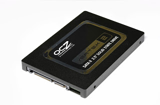
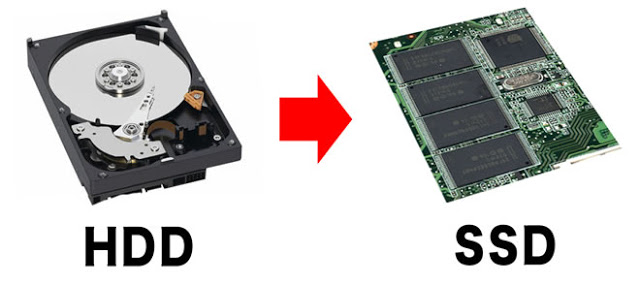

Selama ini media penyimpanan yang pasti kita gunakan untuk menyimpan data dan salah satu komponen utama pada komputer atau PC adalah Hardisk atau biasa disingkat HDD (Hardisk Drive). Seiring dengan perkembangan teknologi, media penyimpanan pun ikut berkembang. Saat ini yang sedang banyak dibicarakan ialah SSD, yang merupakan pengembangan dari teknologi HDD.

SSD adalah singkatan dari Solid State Drive. Prinsipnya SSD itu sama seperti HDD yaitu untuk menyimpan data. Hanya saja data tidak disimpan pada lapisan-lapisan magnetik layaknya HDD. SSD menyimpan semua data pada chip-chip emory flash yang saling terhubung satu sama lain. Flash memory pada SSD jelas berbeda dengan yang digunakan pada Flashdisk dalam hal type dan kecepatan. Chip flash memori pada SSD memiliki kecepatan yang lebih tinggi daripada Flashdisk. Dengan kapasitas yang sama, harga SSD jauh lebih mahal daripada Flashdisk.

Kecepatan baca tulis SSD bisa 8 kali lebih cepat dibanding dengan HDD. PC yang terpasang SSD dapat melwati proses booting dalam hitungan detik, pastinya tidak melebihi 1 menit. Sedangkan waktun yang dibutuhkan HDD lebih lama tergantung dengan spesifikasi, dan yang pasti tidak lebih cepat bila dibandingkan dengan SSD.
SSD yang tersedia sekarang adalah 2,5 inci, itu berarti SSD ini hanya diperuntukan untuk penggunaan laptop. Seiring dengan semakin kecilnya ukuran laptop dan semakin banyaknya pengguna PC tablet untuk menjelajahi web, Anda akan melihat kemampuan SSD yang dapat beradaptasi dengan mudah dengan ukuran laptop/tablet.
Kelebihan SSD dari HDD antara lain yaitu :
- Panas atau suhu SSD tidak setinggi HDD.
- Konsumsi daya listrik sangat kecil, SDD cukup butuh daya kurang dari 1 watt sedangkan HDD membutuhkan daya yang mencapai lebih dari 10 watt
- Tidak ada putaran motor dan piringan membuat SDD sama sekali tidak berisik.
- Kecepatan write dan read yang jauh lebih tinggi dibanding HDD.
Kekurangannya yaitu harga yang jauh lebih mahal. Mahalnya harga SSD bisa mencapai 9 kali lipat bila dibandingkan dengan HDD dan kapasitas penyimpanan yang ada saat ini belum sebesar kapasitas yang dapat disediakan oleh HDD.

 Perbedaan Jaringan 3G dan 4G
Perbedaan Jaringan 3G dan 4G
 Jumlah Core dan Hubungannya dengan
Jumlah Core dan Hubungannya dengan Pengertian Subnetting IP Address
Pengertian Subnetting IP Address  Cara Mengatur Layar di Windows Saat
Cara Mengatur Layar di Windows Saat Pengertian dan Cara Defrag/Defragment
Pengertian dan Cara Defrag/Defragment  Macam macam file audio dan
Macam macam file audio dan  Apa itu Extreme Programming ?
Apa itu Extreme Programming ?